3D Scanning and Motion Capturing · 慕尼黑工业大学
立体视觉三维重建
完整的立体重建流程——从图像对出发，经过稀疏匹配、图像校正和稠密匹配，生成视差图、点云和网格，并在 TUM Intrinsic3D 与 KITTI 数据集上进行评估。
动机与思路
应用场景
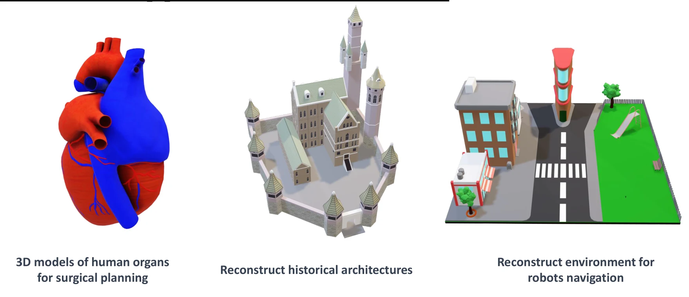
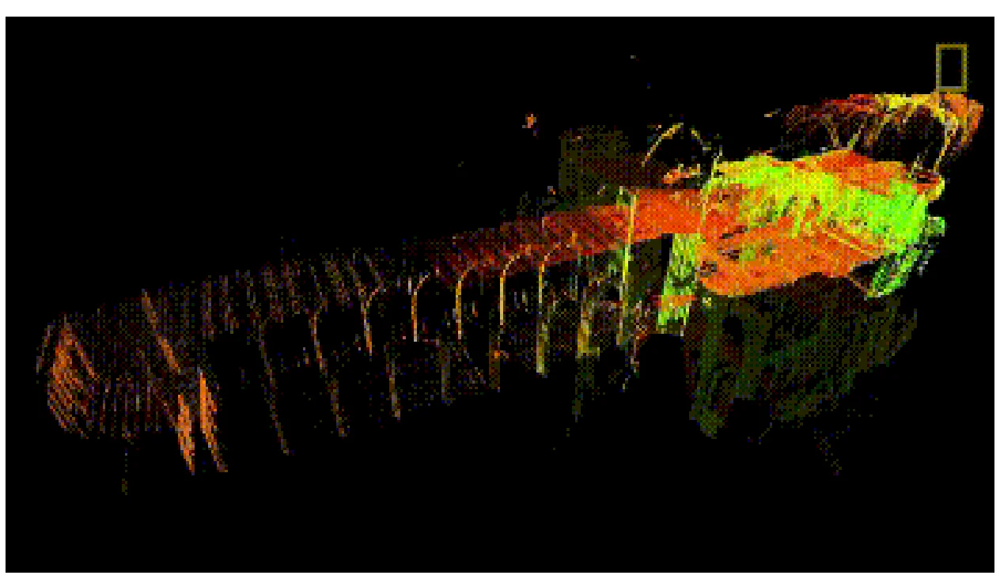
我们的思路
以同一物体的多张照片作为输入，经过重建，输出三维模型。
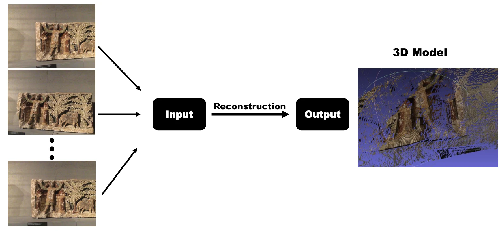
相关工作
数据集
TUM Intrinsic3D – Bricks RGBD
彩色图和深度图 · 彩色与深度相机内参 · 相机位姿矩阵 · 单个物体的多视角图像
KITTI Stereo 2015
视差图 · 彩色图 · 相机畸变系数 · 相机外参 · 不同场景的图像
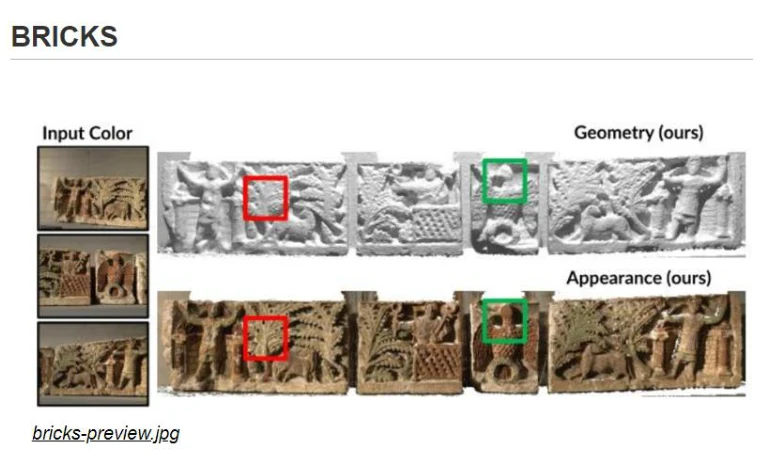
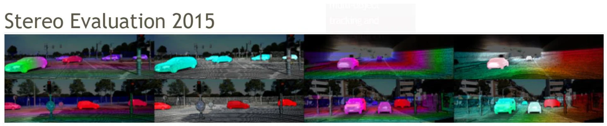
数据集对比
| TUM Intrinsic3D | KITTI Stereo 2015 | |
|---|---|---|
| 优点 |
|
|
| 缺点 |
|
|
使用的库
OpenCV
计算机视觉算法
Eigen
矩阵运算
FLANN
最近邻搜索
Ceres Solver
非线性优化
重建流程
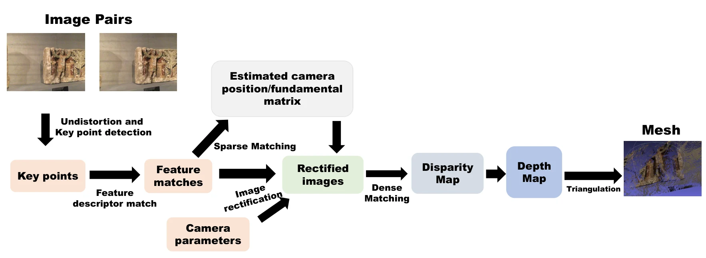
方法
稀疏匹配——关键点检测器
对比了六种检测器：ORB、BRISK、FAST、Shi-Tomasi、SURF 和 SIFT。
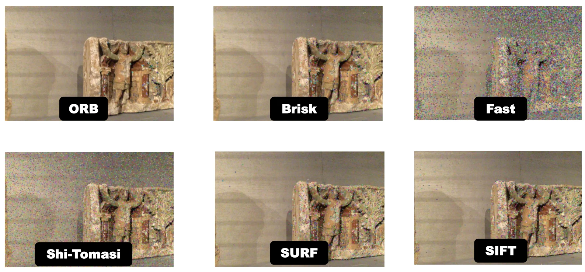
关键点检测器与特征描述子对比
基础矩阵计算使用 RANSAC，描述子匹配使用 FLANN。
| 数据集 | 指标 | BRISK | ORB | Shi-Tomasi | SIFT | SURF | FAST |
|---|---|---|---|---|---|---|---|
| TUM Intrinsic | 平均旋转误差 | 0.0616 | 0.1241 | 0.1053 | 0.1014 | 0.0838 | 0.0619 |
| 异常基础矩阵数量 | 20 | 40 | 33 | 33 | 27 | 20 | |
| 平均平移误差 | 0.9993 | 0.9998 | 0.9993 | 0.9994 | 0.9993 | 0.9994 | |
| 处理 10 对图像耗时（秒） | 22.5254 | 57.269 | 62.391 | 430.32 | 44.541 | 670.31 | |
| KITTI Raw | 平均旋转误差 | 0.0125 | 0.0318 | 0.0097 | 0.0078 | – | 0.0111 |
| 异常基础矩阵数量 | 0 | 0 | 0 | 0 | – | 0 | |
| 平均平移误差 | 0.7645 | 1.03877 | 0.5479 | 0.5403 | – | 0.6106 |
所有方法的平移误差都过高，因此后续步骤使用真实平移量。
基础矩阵估计
为了评估稀疏匹配方法，先由检测到的关键点估计基础矩阵，再转换为本质矩阵并分解出旋转和平移，与真实相机位姿进行比较（旋转和平移的均方误差）。
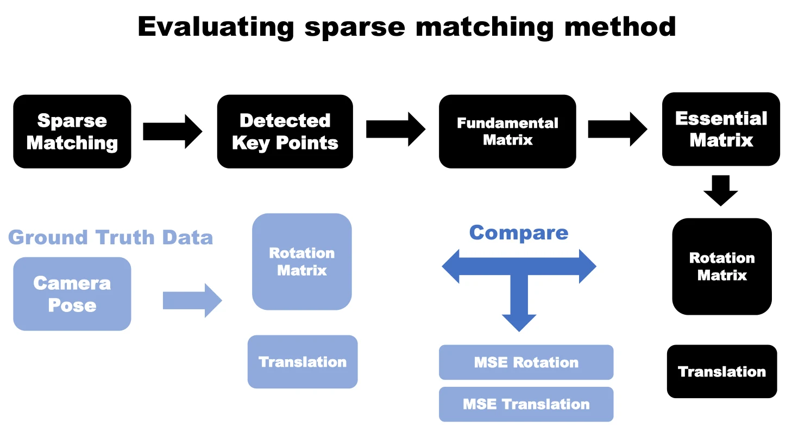
使用 BRISK 作为关键点检测器和特征描述子，FLANN 进行描述子匹配。
| 数据集 | 指标 | RANSAC | LMEDS | 七点法 | 八点法 |
|---|---|---|---|---|---|
| TUM Intrinsic | 平均旋转误差 | 0.0616 | 0.1813 | 0.1813 | 0.0296 |
| 异常基础矩阵数量 | 20 | 60 | 60 | 9 | |
| 平均平移误差 | 0.9993 | 0.9998 | 0.9998 | 0.9995 | |
| KITTI Raw | 平均旋转误差 | 0.0125 | 0.0055 | 0.0055 | 0.0199 |
| 异常基础矩阵数量 | 0 | 0 | 0 | 0 | |
| 平均平移误差 | 0.7645 | 0.5275 | 0.5275 | 0.9225 |
同样，所有方法的平移误差都过高，后续步骤使用真实平移量。
图像校正
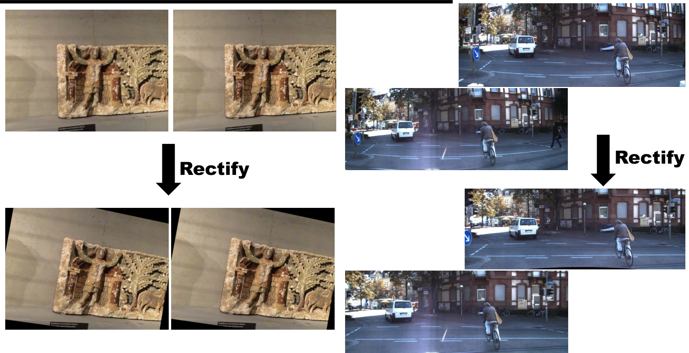
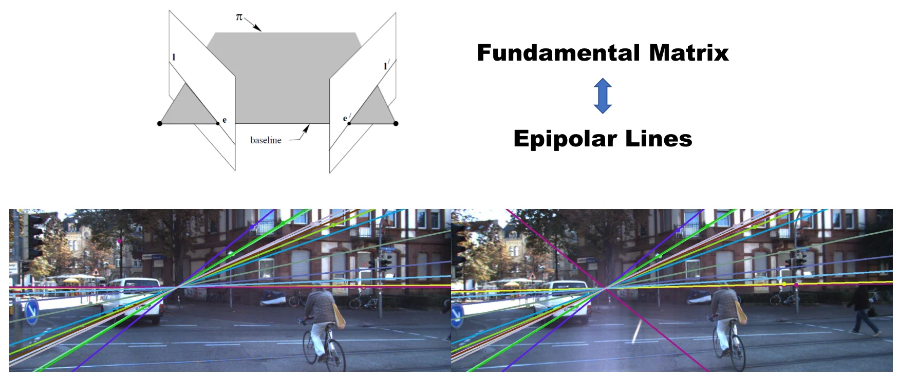
稠密匹配
得到基础矩阵、本质矩阵、平移矩阵和旋转矩阵后，利用校正后的图像对计算视差图。
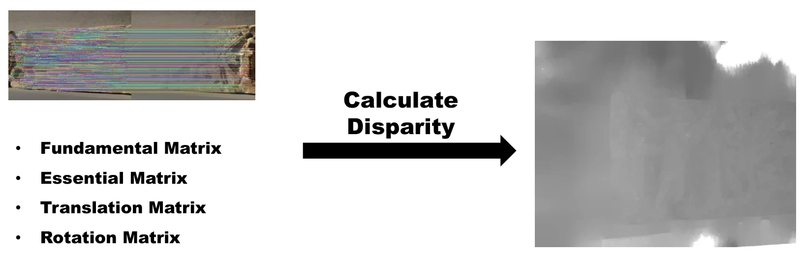
块匹配（Block Matching, BM）
- 当对应点位于平行的极线上时，就可以逐行扫描左图。
- 对每个像素，在右图中寻找“相似”的像素。
- 单个像素难以匹配，因此使用大小为 K×K 的像素块（展平为向量）。
- x 方向上的差值即为视差。
相似度用两个展平为向量 wL、wR 的 K×K 窗口之间的绝对差之和（SAD）来衡量：
SAD(x, y, d) = ‖ wL(x, y) − wR(x − d, y) ‖
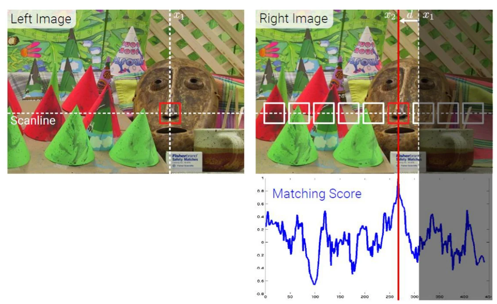
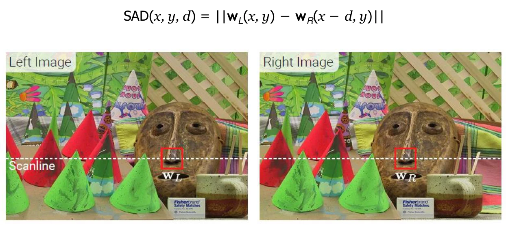
半全局块匹配（Semi-Global Block Matching, SGBM）
- 之所以称为“全局”，是因为它会利用整幅图像中的信息。
- 具体做法是在多个方向上考虑相邻像素来计算视差。
- 同样取 K×K 的块，并考虑其周围的 8 个方向。
- 选择聚合匹配代价最小的方向来计算视差。
- 使用 Birchfield–Tomasi 相异度寻找“相似”像素：对于同一扫描线上左右图像的列 xl、xr，利用图像强度 Il、Ir 的线性插值函数 Îl、Îr 定义一对对称函数，二者的最小值即为相异度。
d̄(xl, xr, Il, Ir) = minxr−½ ≤ x ≤ xr+½ | Il(xl) − Îr(x) |
d(xl, xr) = min{ d̄(xl, xr, Il, Ir), d̄(xr, xl, Ir, Il) }
记 D 为相异度项，R 为由相邻像素计算的正则项，则用于求视差的总代价为 E = D + R。
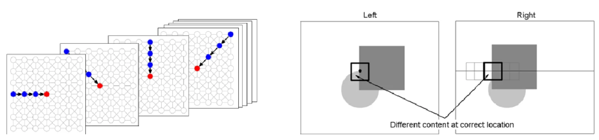
生成的视差图
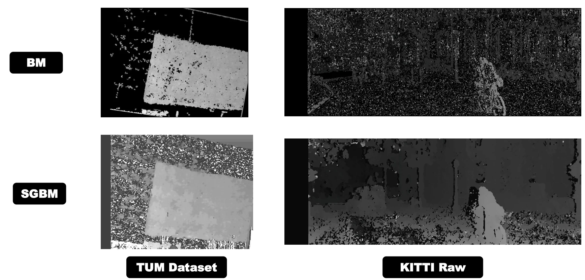
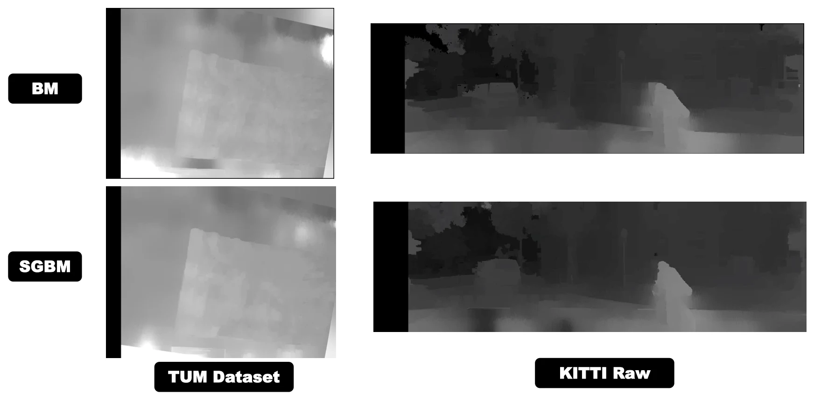
稠密匹配评估
将生成的深度图与真实深度图逐像素比较。当某像素的差值同时超过 3 像素和 5% 时，记为错误：
Error = count( |dij − d′ij| > 3 px & |dij − d′ij| / d′ij > 0.05 ) / 有效像素总数
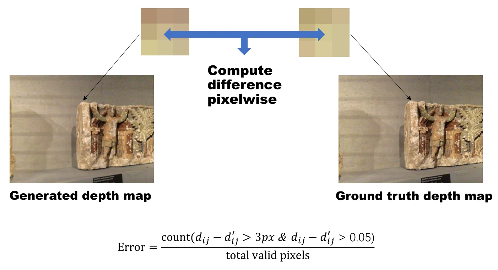
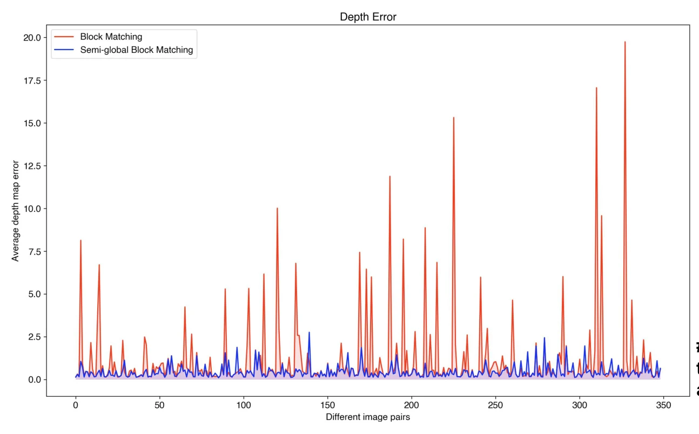
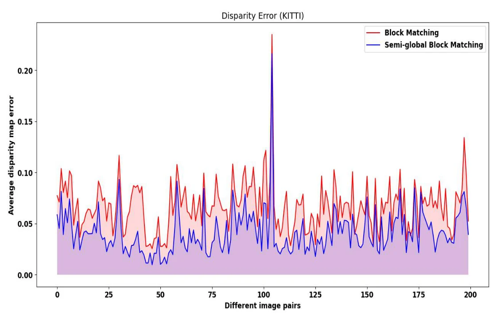
三维模型生成
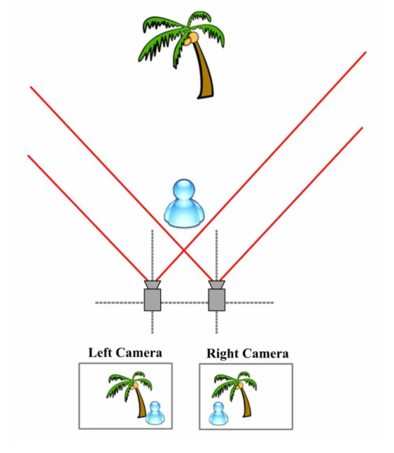
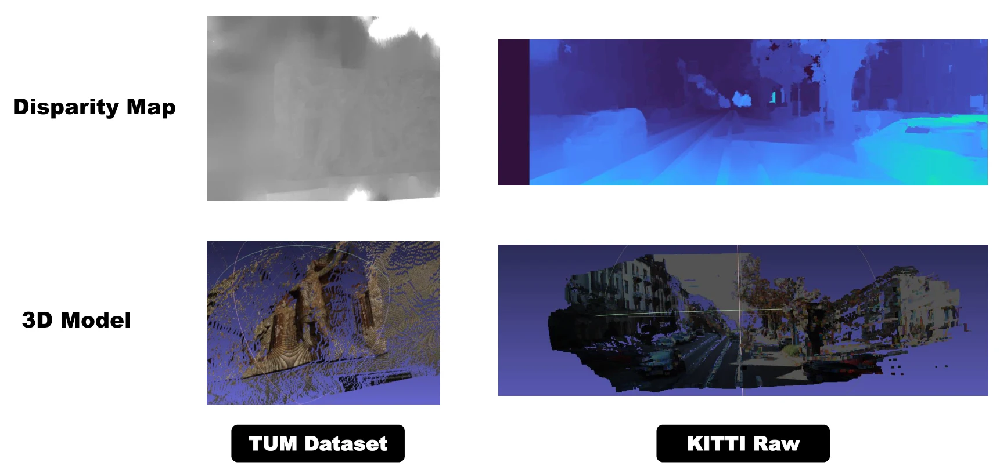
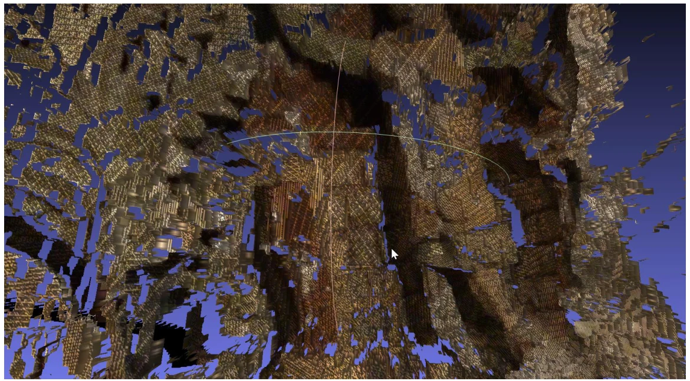
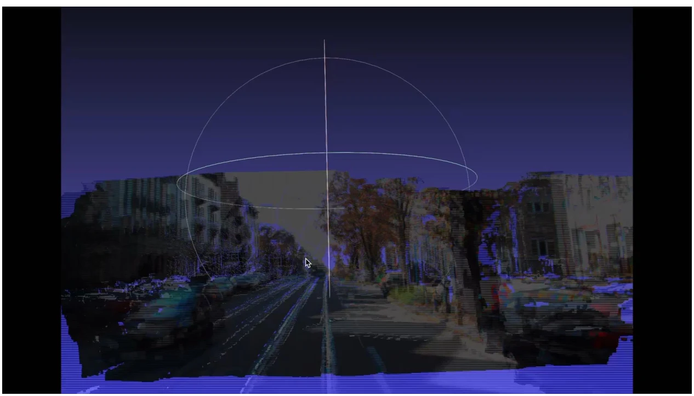
结论
- 实现了立体重建流程。
- 涵盖标定、关键点计算和三维模型构建等关键步骤。
- 结果表明，从立体图像重建三维模型简单且高效。
- 生成的三维模型在场景理解、物体识别和导航等方面具有应用潜力。
讨论
- 本项目可作为进一步研究和开发的起点。
- 可以引入 ICP 方法和其他数据来改进三维模型。
- 可在机器人、自动驾驶等领域探索新的应用。
- 三维模型的精度和鲁棒性仍有提升空间。
- 可以集成新的算法和技术以获得更好的性能。